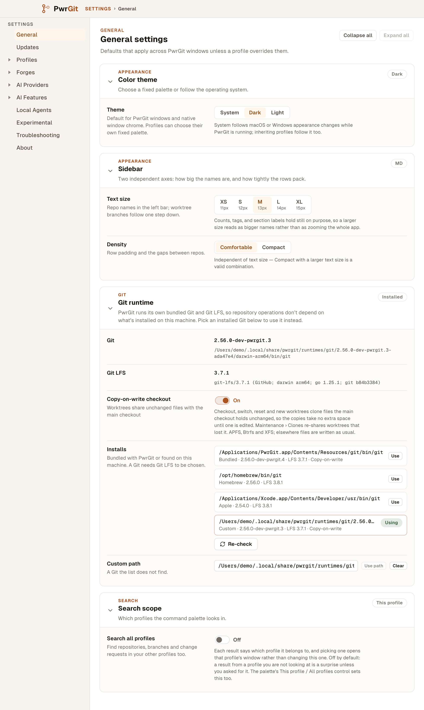

The operator's screenshot (1a) is the starting point. PwrGit runs its own Git build; since v0.53 that build ships copy-on-write and the Clones re-share, and the runtime now moves faster than the app (.3 → .4 landed between app releases). Today the only way to run a newer build is to download it by hand, unpack it, and paste the binary's path into Custom path. That is what the screenshot shows: an ad-hoc 2.56.0-dev-pwrgit.3 under ~/.local/share, selected manually. PwrAgent (1c) already gives Git its own destination with status, available paths and a manual path.
main in the same state; the project holds the operator's screenshot)
The card sits below Color theme and Sidebar on General, a page whose nav row has no children. Clones' "Copy-on-write is off" link opens General at the top (settings:open {page:"general"}), so the reader still has to scroll to find the switch it pointed at.
The card can choose a Git that already exists on disk. It cannot check for, download, verify or install one, so the runtime only moves with an app release, or by hand with no checksum or signature check at all (the ad-hoc .3 in 1a).
The selected row reads Custom · 2.56.0-dev-pwrgit.3. Whether that build was verified, and whether it is newer than the one PwrGit bundles, is not shown. PwrAgent marks rows Notarized / Ad-hoc / System; PwrGit has no equivalent.
Both the in-use row and the Custom path field cut the path at its most informative part (…/runtimes/git/2…). The version is in the meta line below in proportional type.
The settings window's minimum width is 760; nav 208 + padding 44 leaves a 508 px column. The field row never folds, so long versions wrap into a narrow strip.
The Git/LFS readings, the copy-on-write switch and its Clones help text, "A Git needs Git LFS to be chosen", Re-check, and a chosen Git that never silently falls back.
The operator's PwrAgent screenshot is in the Claude Design project only; it is not contrived, so the repo copy omits it.
Taken: Git has its own nav destination; one status block says what runs; available paths carry a provenance badge; manual path is last. Not taken: PwrAgent's 20 px Re-check and full-width path rows, which would break PwrGit's 760 px card column and its existing .settings-ai-install rows.
Git becomes a nav group right after General. Its children route to cards on the Git page, as Forges' children do (a child scrolls to and unfolds its card; it never opens a pane). In use answers "which Git runs, and is it healthy". PwrGit's Git answers "is there a newer verified build, and do I want it". Installs lists every Git PwrGit can run, with Custom path last. General keeps Color theme, Sidebar and Search scope. Deep links to general + git-runtime keep working: they land on Git › In use.
Settings
Settings
Dots follow the nav rule: aria-hidden, and every state that isn't fine also shows a word. In use is green when the Git in use answered, red with "Unavailable" when it didn't. PwrGit’s Git has no dot until a check has run (a green dot would be a guess), accent + "Update" when a newer build can be downloaded or used, red + "Failed" after a failed install. The app's own Updates page keeps its name; the Git child says PwrGit’s Git so the two never read as the same thing.
Settings
Git
The Git and Git LFS PwrGit runs for every repository operation.
Git
PwrGit runs its own Git and Git LFS, so repository operations don’t depend on what’s installed on this machine.
Checkout, switch, reset and new worktrees clone files the main checkout holds unchanged, so the copies take no extra space until one is edited. Maintenance › Clones re-shares worktrees that lost it. APFS, Btrfs and XFS; elsewhere files are written as usual.
Git
Newer builds of PwrGit’s Git are published between app releases. PwrGit checks each one’s checksum and signature before it can be used, and keeps the one you were on.
Downloading doesn’t switch Git. You choose when to use it.
Git
Every Git PwrGit can run. A Git needs Git LFS to be chosen.
The reading is the version in mono with its provenance chip; the path sits beneath, wrapping (In use) or ellipsised with the viewport tooltip (Installs rows). Long dev versions break between parts, never at their hyphens.
Signed · PwrDrvr only after codesign --strict --all-architectures passes team T44CNHC4UH on every Mach-O; Checksum verified on Linux; nothing on an installed Git (PwrGit did not check it, so it claims nothing).
Install never switches Git. "Use" is the same selection the Installs list makes, so there is one rule for what runs: a Git you chose > a downloaded build you chose > bundled.
As PwrGit download rows, so the list stays "every Git PwrGit can run" and Rollback is just Use on the previous row (3d).
One card body per state, at the 760 px column. The chip and the nav child read the same answer. Progress is announced at phase changes, not per byte.
Git
Repositories keep using 2.56.0-dev-pwrgit.4 meanwhile.
Git
Operations already running finish on the Git they started with. Nothing is restarted.
Git
Git
libexec/git-core/git-remote-https isn’t signed by PwrDrvr (team T44CNHC4UH). PwrGit deleted the download. You’re still on 2.56.0-dev-pwrgit.4.
Other failure sentences, same slot: "The download’s checksum doesn’t match the release (expected 9f81c626…, got 1d0e…)" · "The release lists runtime-files.json differently from what was unpacked: bin/git changed" · "This build is for linux-arm64, not this Mac" · "The download stopped at 16.3 of 38.9 MB: connection reset".
Git
GitHub couldn’t be reached (getaddrinfo ENOTFOUND api.github.com). Downloaded builds are checked on disk before each use and work offline.
Check nowGit
You chose this Git by path, so PwrGit keeps running it. Use below switches to the verified build.
Git
2.57.0-dev-pwrgit.1 is published but needs a newer PwrGit to verify it. Settings › Updates
At the 760 px window minimum the content column is 508 px. Below 560 px of card width the Git page's fields fold their label above the control (a container query on the Git stack only; other panes are untouched).
Git
Card header (Enter/Space folds, ↑↓ moves between headers, as every pane) → primary action → Check now → rows' Use buttons. A row's Use has aria-label="Use 2.56.0-dev-pwrgit.5", not just "Use".
When Download becomes the progress block, focus moves to Cancel; when it finishes, to Use. A failure moves focus to Try again and the sentence is role="alert".
role="progressbar" with aria-valuenow and an aria-valuetext of "16.3 of 38.9 MB". The polite live region speaks only phase changes ("Checking signatures", "Ready to use"), never byte counts.
The house ring (outline: 2px var(--focus-ring)); rows inside the scroller keep scroll-margin.
Provenance: specimens use PwrGit's light tokens (tokens.css :root[data-theme="light"]) and the shipped settings field, chip and install-row metrics from app.css. Versions after .4, sizes and dates are contrived. Baseline screenshots are the operator's, 2026-11-05. Drawn at main @ 5c72a1ce.